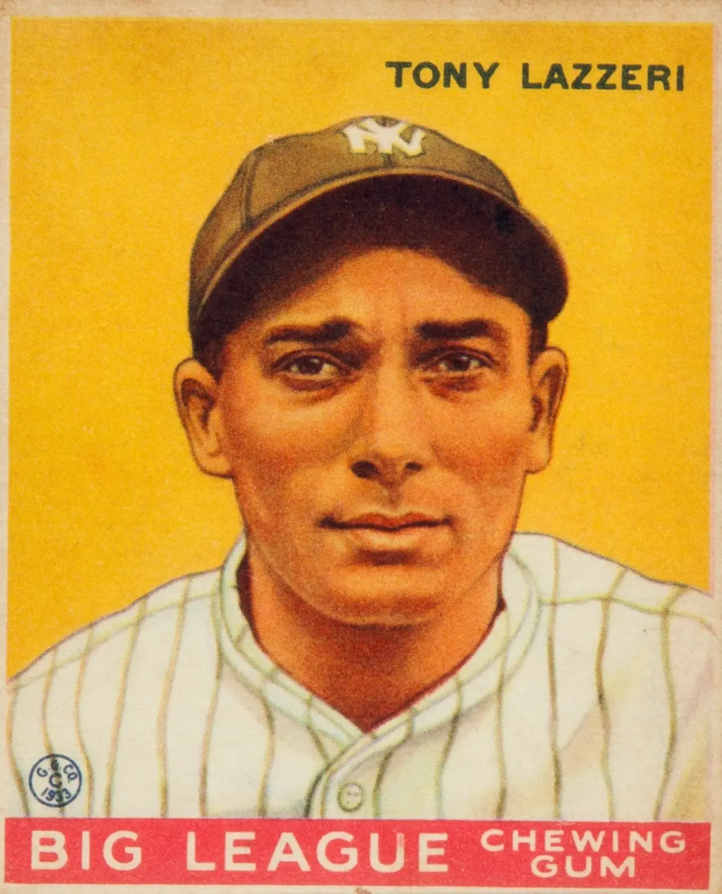

Tony Lazzeri "Poosh 'Em Up Tony"
Career Highlights & Facts
(Facts are AI-generated and may require verification)
- Set an American League record by driving in 11 runs in a single game on May 24, 1936.
- Became the first player in Major League history to hit two grand slams in one game.
- Earned induction into the National Baseball Hall of Fame in 1991.
Would you like to find out more about Tony Lazzeri?
Career Totals
| WAR | AB | H | HR | BA | R | RBI | SB | OBP | SLG | OPS | OPS+ |
|---|---|---|---|---|---|---|---|---|---|---|---|
| 47.6 | 6297 | 1840 | 178 | .292 | 986 | 1194 | 148 | .380 | .467 | .846 | 121 |
Statistics via Baseball-Reference.com
The Original Clue